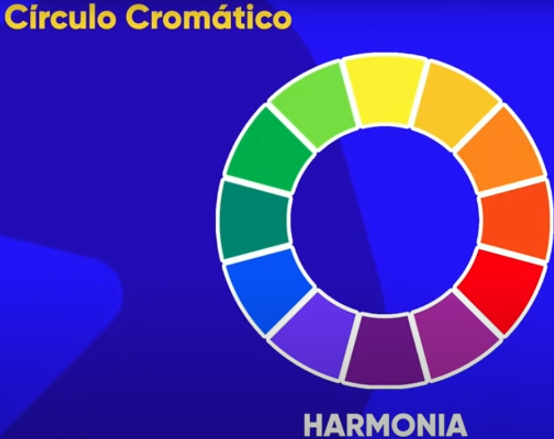

Cores usando tag style="backgroud-color: cores padrão / nomes"
Cores usando tag style + código hexadecimais.
#0022ff (00 é red, 22 é green, ff é blue)
Cores usando tag style + código rgb.
background-color: rgb(0, 0, 255)
Código variam de 0 a 255
Cores com tag style + HSL (Hue - matiz,S-Saturation, L - lightness).
Matiz é 0 a 341, Saturação é %, Lightness é %
Dica: Passando o mouse sobre a cor, na tag, é possível mudar o método (cores padrão / nome, hexadecimal,....) e as cores / tonalidades / transparência
Usar entre 3 e 5 cores (ou variações) do círculo cromático. Usar como cor primária a cor da logo do cliente.
São aquelas que se contrastam mais. Estão em sentidos opostos na representação em círculo.
São aquelas que mais se assemelham. Estão ao lado da cor atual.
Usar uma cor principal, duas análogas, e uma complementar à principal
Uma cor principal, uma análoga de um lado, e para o outro lado, pular a imadiatamente análoga e usar a próxima.
Escolher cores intercaladas, pulando uma ou duas cores.
Cores triádicas são cores intercaladas pulando três cores.
Cores em quadrado - pulando duas cores.
Cores tetrádicas - duas cores e suas respectivas complementares.
Utilizar uma cor + 3 variações dela (saturação e luminosidade)
Acessar color.adobe.com e escolher modo RGB. Lá serão gerados os códigos para as cores, de acordo com o estilo (intercaladas, monocromáticas, triádicas,....)
Em extrair tema, é possível adicionar uma imagem para que o site gere a paleta.
paletton.com - gera paletas e mostra um site de exemplo.
coolors.com - gera paletas aleatórias com cores que se combinam.
Colorzila - extensão do chroome que permite extrair as cores de um site.
Dica: mockFlow.com - site para criar rascunho do wireframe do site.
Dica: Facilitar a utilização de cores criando variáveis globais que assumem valores de cores. Isso deve ser feito na pseudoclasse root, onde as variáveis são globais.
:root{
--cor0:#código hexadecimal;
--cor1:#código hexadecimal;
}
E na utlização:
backgroud-color: var(--cor0);
color: var(--cor1);